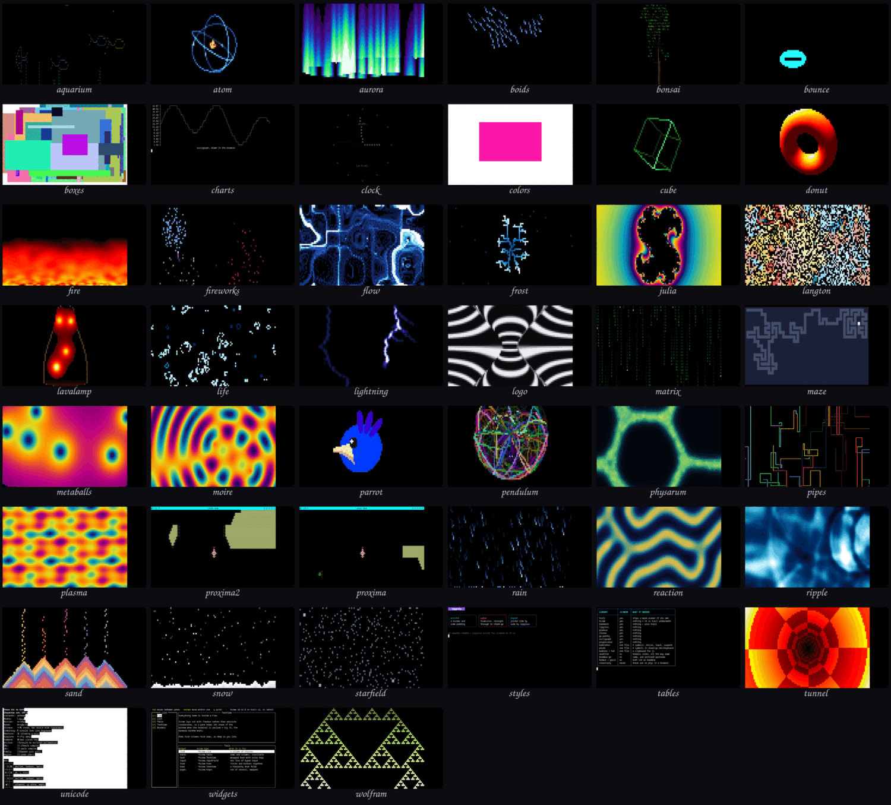

tuiwasm › demosAll 45 demos
tuiwasm runs Go's terminal-UI libraries — tcell for the screen layer, and the Charm
stack above it: lipgloss for styling, bubbletea for the update loop, glamour for Markdown — inside a
browser tab, drawing into a real terminal emulator built on
xterm-go . Every demo below is the same
WebAssembly binary with a different query string; each link opens it running.

Screen demos — they paint cells and read keys
aquarium fish swimming past swaying seaweed atom electrons on tilted orbits round a glowing nucleus aurora curtains of light, folding, with the creases where they turn boids flocking by separation, alignment and cohesion bonsai a bonsai tree growing branch by branch bounce the screensaver logo, and the wait for it to hit a corner boxes tcell's own boxes demo — random boxes, timed clock an analog clock, after aclock colors tcell's own colors demo — boxes cycling through the palette cube a rotating wireframe solid, shaded by depth donut a lit torus with a z-buffer fire a heat grid seeded with noise and cooled upward fireworks shells that rise, burst and droop into willows flow particles carried through a divergence-free curl-noise field frost a crystal growing by diffusion-limited aggregation julia a Julia set morphing as its parameter walks the cardioid langton Langton's ants: chaos, then the highway lavalamp wax that heats, rises, cools and sinks life Conway's life, colored by how long a cell has lived lightning a branching discharge: leader, return stroke, afterglow magnetosphere the logo from magnetosphere.net, counter-scrolling matrix falling columns of glyphs maze a maze carved by backtracking, then solved metaballs blobs that bulge and merge as they approach moire two drifting ripples interfering parrot the party parrot, rolling once around the hue wheel pendulum double pendulums released together, shearing apart physarum slime mold laying trails and building a transport network pipes pipes growing and turning, with correct elbows plasma summed sine waves of position, offset by time proxima Escape from Proxima 5 — gdamore's tcell space shooter proxima2 Escape from Proxima 5 on tcell v2 — the same game, one major back rain drops with depth, slant, streaks and splashes reaction Gray-Scott reaction-diffusion: spots that divide into a labyrinth ripple a ripple tank: rain falling, rings meeting and interfering sand grains heaping at their angle of repose snow flakes that sway, settle and drift into banks starfield stars streaming past the viewer tunnel flying down a textured tube unicode tcell's own unicode demo — wide, combining and emoji glyphs widgets tview — a flexbox of lists, tables and text views on tcell v2 wolfram elementary cellular automata scrolling upward - 30, 90, 110
Text demos — they write styled text
charts asciigraph — a line plot in cells styles lipgloss — borders, color, alignment tables go-pretty — the wasm compatibility matrix
Source:
github.com/0magnet/tuiwasm .
More Go and WebAssembly projects: magnetosphere.net/software .